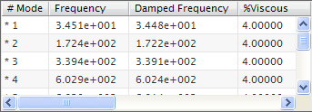

Apply viscous damping to the normal modes
 Simulation Navigator
Simulation Navigator
-
 Normal Modes [10] (under the RS_Meta_Solution_1 node)
Normal Modes [10] (under the RS_Meta_Solution_1 node)
-
 Edit Damping Factor
Edit Damping Factor -
% Viscous
4.0
-
OK
-
Response Simulation Details View
-
 Frequency (hold the mouse over any of the column headers)
Frequency (hold the mouse over any of the column headers)
-
Columns→Damped Frequency (make sure Damped Frequency is selected)
-
Compare the values in the Frequency column to the values in the Damped Frequency column.

Because you applied the command to the Normal Modes node, the software applies the damping to all ten modes. You can define damping for individual modes by right-clicking the mode in the Response Simulation Details View panel and choosing Edit Damping Factor.
|
Note |
You can also define physical damping for your Response Simulations. For more information, see Damping overview in the Advanced Simulation online help. |